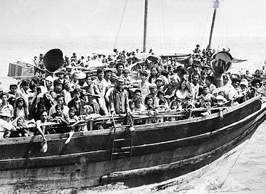

The Vietnamese American Experience
May 16, 2017
Website By: Mark Zhang
Why did the Vietnamese Immigrate to America?
North Vietnam wanted to unify the two separated states of North Vietnam and South Vietnam. They got help from their ally Viet Cong, a southern Vietnamese community and waged war on South Vietnam. America decided to take part in the war and help out South Vietnam, but had to retreat themselves after the main turning point of the war, the Tet Offensive. After the fall of Saigon in 1975, Vietnam was officially a communist country, causing millions of desperate people to flee the country. About 2 million Vietnamese civilians had died to the war that was going on. The American soldiers had used herbicide to clear about 4,000 square miles of Vietnamese forest to find the Viet Cong soldiers. A lot of the Vietnamese who were able to arrive, had PTSD from the war back in the homeland. The Vietnam were PULLED to America for safety and PUSHED from Vietnam, because of the chaos.
_001.jpg)
The Vietnam War was a bloody battle
Vietnamese Immigrants' Experience in the US
When the Vietnamese got to the US, they did not speak the language, nor know the American culture very well. They were sent in batches into Vietnamese refugee camps. The Vietnamese were economically one of the most successful Asian immigrant groups. They first started working at low paying small jobs and industries, before opening their own small businesses. The Vietnamese opened restaurants, small shops, nail salons, food stores, and import and export shops. 30% had medical professions, 16.9% were in transport occupations, 11.7% were in clerical and sales uccupations, and 4.9% were farmers and fishermen, who were the lowest class.
The First Waves of Vietnamese Immigrants Who Fled to America were Known as "Boat People"
America's Response to South East Asian Immigration
Although the American community did not like the idea of these South East Asians coming in from various countries, the government had supported their immigrations as war refugees. The Refugees Act of 1980 had tried to help these immigrants by allowing almost double the amount of immigrants able to come in from these countries. The US even had provided easy access to citizenship for the Vietnamese. After one year of living here, they were considered permanent citizens and would not be deported. They could apply for citizenship after five years. The general public had believed the Vietnamese in their Asian culture would not be able to successfully assimilate into American culture. This was proved wrong however when statistically, Vietnamese had the one of the fastest rates of naturalization of Asian groups in the US. Several American communities had tried to form protests requesting to stop the flow of immigrants. In a public poll, 47% voted against immigrants, 37% in favor of, and 14% uncertain. The group against had a clear advantage in votes. Even California's governer Jerry Brown had attempted to prevent planes that carried Vietnamese refugees from landing in San Francisco. There were even violent acts commited to the hatred of their ethnicity. Journalist Pham Van Tap was sleeping in his small office in Garden Grove, California, until an arsonist burnt down his office building. "He was heard screaming before he succumbed to smoke inhalation." Duong Trong Lam, a 27 year old was shot dead in the pulmonary artery with a single bullet, just above the heart. The gunman had found him walking right outside his apartment building in San Francisco.